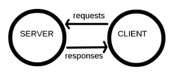
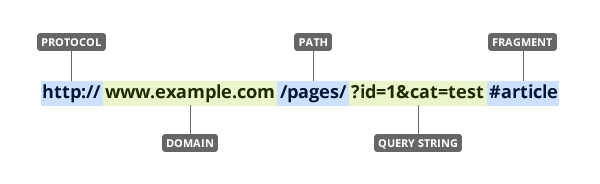
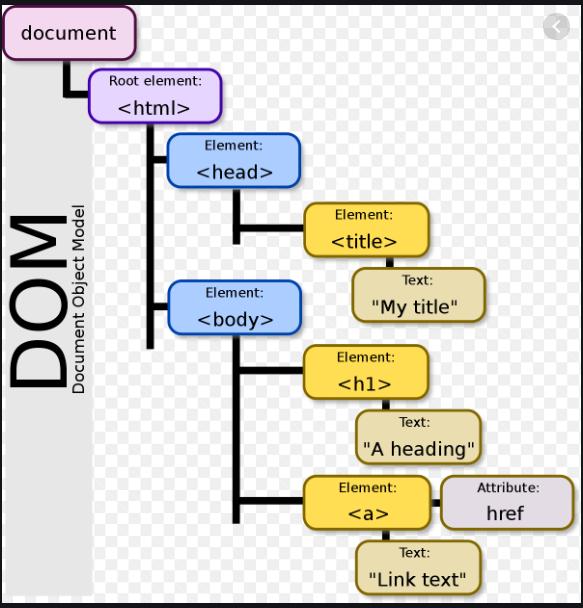
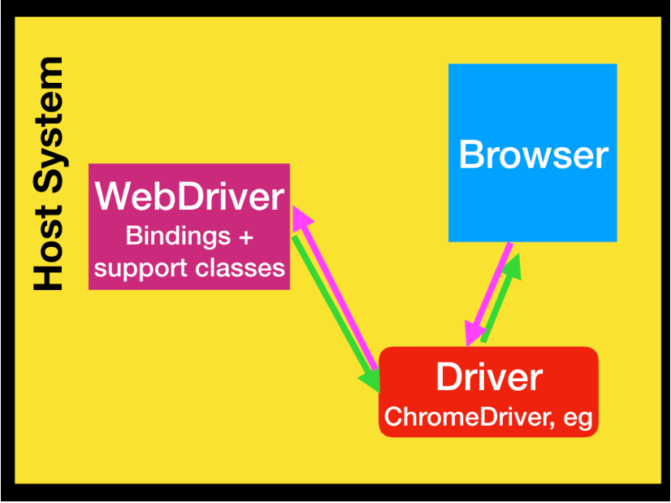
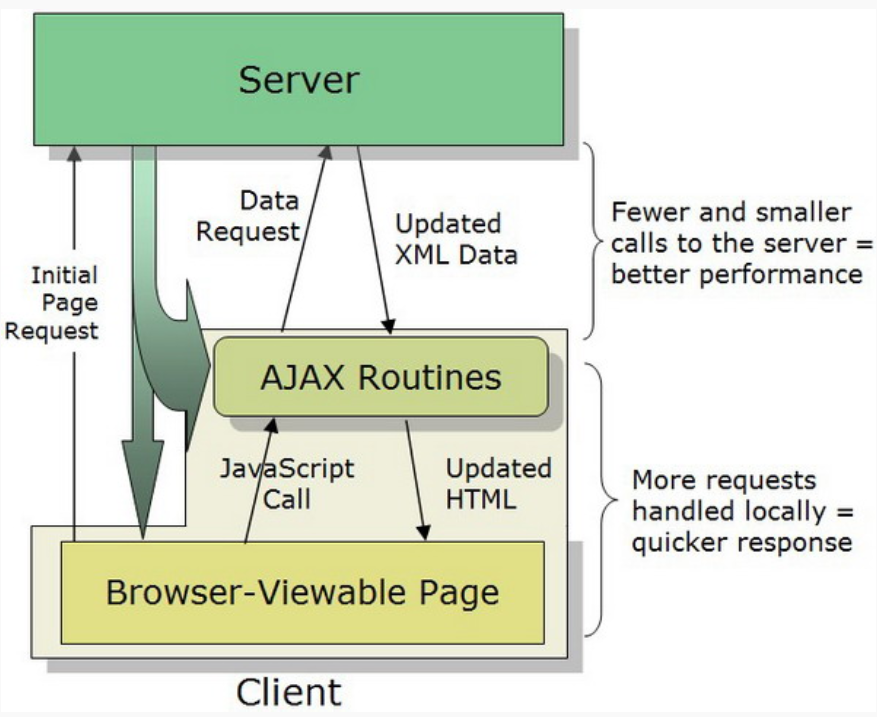

Concepts
We start with the basic concepts that are generic to all web scraping approaches.
How does the web work?
Components
Computers connected to the web are called clients and servers. A simplified diagram of how they interact might look like this:

- Clients are the typical web user’s internet-connected devices (for example, a computer connected to Wi-Fi) and web-accessing software available on those devices (usually a web browser like Firefox or Chrome).
- Servers are computers that store webpages, sites, or apps. When a client device wants to access a webpage, a copy of the webpage is downloaded from the server onto the client machine to be displayed in the user’s web browser.
- HTTP is a language for clients and servers to speak to each other.
So what happens?
When we type a web address into our browser:
- The browser finds the address of the server that the website lives on.
- The browser sends an HTTP request message to the server, asking it to send a copy of the website to the client.
- If the server approves the client’s request, the server sends the client a
200 OKmessage, and then starts displaying the website in the browser.
Uniform Resource Locator (URL)
To retrieve information from the website (i.e., make a request), we need to know the location of the information we want to collect. The Uniform Resource Locator (URL) — commonly know as a “web address”, specifies the location of a resource (such as a web page) on the internet.
A URL is usually composed of 5 parts:

The 4th part, the “query string”, contains one or more parameters — in this case, there are two parameters: id and cat. The 5th part, the “fragment”, is an internal page reference and may not be present.
It is often convenient to create variables containing the domain(s) and path(s) we’ll be working with, as this allows us to swap out paths and parameters as needed. Note that the path is separated from the domain with a forward slash / and the parameters are separated from the path with a question mark ?. If there are multiple parameters they are separated from each other with an ampersand &.
Hyper Text Markup Language (HTML)
What is HTML?
HTML stands for Hyper Text Markup Language. It is the standard markup language for creating Web pages. It describes the structure of a Web page. HTML consists of a series of elements. HTML elements tell the browser how to display the content. HTML elements label pieces of content such as “this is a heading”, “this is a paragraph”, “this is a link”, etc. Below is a simple HTML document:
<!DOCTYPE html>
<html>
<head>
<title>Page Title</title>
</head>
<body>
<h1>My First Heading</h1>
<p>My first paragraph.</p>
</body>
</html>The <!DOCTYPE html> declaration defines that this document is an HTML document. The <html> element is the root element of an HTML page. The <head> element contains meta information about the HTML page. The <title> element specifies a title for the HTML page (which is shown in the browser’s title bar or in the page’s tab). The <body> element defines the document’s body, and is a container for all the visible contents, such as headings, paragraphs, images, hyperlinks, tables, lists, etc. The <h1> element defines a large heading. The <p> element defines a paragraph.
HTML Elements
An HTML element is defined by a start tag, some content, and an end tag:
<tagname>Content goes here...</tagname>The HTML element is everything from the start tag to the end tag. The most commonly used HTML elements are listed as follows:
HTML links are defined with the <a> tag. The link’s destination is specified in the href attribute. Attributes are used to provide additional information about HTML elements.
<a href="https://www.w3schools.com">This is a link</a>HTML images are defined with the <img> tag. The source file (src), alternative text (alt), width, and height are provided as attributes:
<img src="w3schools.jpg" alt="W3Schools.com" width="104" height="142">The <table> tag defines an HTML table. Each table row is defined with a <tr> tag. Each table header is defined with a <th> tag. Each table data/cell is defined with a <td> tag.
<table style="width:100%">
<tr>
<th>Firstname</th>
<th>Lastname</th>
<th>Age</th>
</tr>
<tr>
<td>Jill</td>
<td>Smith</td>
<td>50</td>
</tr>
<tr>
<td>Eve</td>
<td>Jackson</td>
<td>94</td>
</tr>
</table>An unordered list starts with the <ul> tag. Each list item starts with the <li> tag. The list items will be marked with bullets (small black circles) by default:
<ul>
<li>Coffee</li>
<li>Tea</li>
<li>Milk</li>
</ul>An ordered list starts with the <ol> tag. Each list item starts with the <li> tag. The list items will be marked with numbers by default:
<ol>
<li>Coffee</li>
<li>Tea</li>
<li>Milk</li>
</ol>There are two display values: block and inline. A block-level element always starts on a new line and takes up the full width available. An inline element does not start on a new line and it only takes up as much width as necessary. The <div> element is a block-level and is often used as a container for other HTML elements. The <div> element has no required attributes, but style, class and id are common. For example:
<div style="background-color:black;color:white;padding:20px;">
<h2>London</h2>
<p>London is the capital city of England. It is the most populous city in the United Kingdom, with a metropolitan area of over 13 million inhabitants.</p>
</div>The <span> element is an inline container used to mark up a part of a text, or a part of a document. The <span> element has no required attributes, but style, class and id are common. For example:
<p>My mother has <span style="color:blue;font-weight:bold">blue</span> eyes and my father has <span style="color:darkolivegreen;font-weight:bold">dark green</span> eyes.</p>HTML elements can be nested (this means that elements can contain other elements). All HTML documents consist of nested HTML elements.
How to View HTML Source?
View HTML Source Code: Right-click in an HTML page and select View Page Source (in Chrome), or similar in other browsers. This will open a window containing the HTML source code of the page we are retrieving from the site.
Inspect an HTML Element: Right-click on an element (or a blank area), and choose Inspect or Inspect Element to see what elements are made up of. This is the content we are viewing in our browser.
Document Object Model (DOM)
To parse HTML, it is convenient to represent our HTML document as a tree-like structure that contains information in nodes and links information through branches. This tree-like structure is called the Document Object Model (DOM). DOM is a cross-platform and language-independent interface that treats an XML or HTML document as a tree structure wherein each node is an object representing a part of the document. Each branch of the tree ends in a node, and each node contains objects. DOM methods allow programmatic access to the tree; with them one can change the structure, style or content of a document. The following schematic is an example of DOM hierarchy in an HTML document:

Below is an example of DOM hierarchy in a working segment of HTML code. Here, we create a spreadsheet using the <table> element, which has row elements <tr>, header elements <th>, and cell elements <td>. In this case, we store the Name, Grade, and GPA of two students: “Adam”, and “Alexander”.
<html>
<body>
<div id="My_table"></div>
<table>
<tr>
<th>Name</th>
<th>Grade</th>
<th>GPA</th>
</tr>
<tr>
<td>Adams</td>
<td>5</td>
<td>4</td>
</tr>
<tr>
<td>Alexander</td>
<td>5</td>
<td>1</td>
</tr>
</table>
</body>
</html>How does WebDriver Interact with Browser?
A simplified diagram of how WebDriver interacts with browser might look like this:

Components
WebDriver is an wire protocol that defines a language-neutral interface for controlling the behaviour of web browsers. At the core of Selenium is WebDriver. Selenium WebDriver refers to both the language bindings and the implementations of the individual browser controlling code and commonly referred as WebDriver.
Each browser is backed by a specific WebDriver implementation, called a driver (or a browser driver). The driver is the component responsible for delegating down to the browser, and handles communication to and from Selenium WebDriver and the browser. The browser drivers are servers that implement the WebDriver’s wire protocol, and know how to convert those commands into the specific browser’s proprietary native API. So, the driver is browser-specific. For example, ChromeDriver is available for Chrome on Android and Chrome on Desktop (Mac, Linux, Windows and ChromeOS). The driver runs on the same system as the browser.
How does it work?
At its minimum requirement, WebDriver talks to a browser through a driver and the communication is two way:
- WebDriver passes commands to the browser through the driver.
- Receives information back via the same route.
Essentially, the browser doesn’t know how to “talk” WebDriver Wire Protocol, and the WebDriver doesn’t know how to “talk” Browser API. In fact, each Browser has its own native API. The browser driver knows how to interpret the Wire Protocol and invoke that browser’s API.
JavaScript, JQuery, and Ajax
What are they?
JavaScript (JS): It is a client-side programming language. JS has a similar structure like C. JavaScript helps encourage interactivity on the website. This script runs on the user’s browser instead of on the server as well as often uses 3rd party libraries, so it can increase the functionality of the website without having to code from the beginning. Considering programming languages like house construction, HTML will format the architecture of the house, CSS will be the carpet and walls to decorate the home. JavaScript adds interactive elements in the house, such as opening doors and lighting.
JQuery: As same as open-source software, jQuery acts as the JS library that simplifies the HTML client-side scripting. jQuery synthesizes all problems in JS into a library. jQuery isn’t a separate programming language. It works in conjunction with JavaScript. With jQuery, you can do more with less effort. jQuery provides APIs that make it easier to browse HTML documents, animations, event handling, and manipulate AJAX.
Ajax: It stands for Asynchronous JavaScript XML, which is a technique to make fast dynamic web pages. You can regard Ajax as a part of JS, running on JS. Moreover, it can be seen as a way to replace data using a server, and update web page sections without requiring to reload the entire page. Ajax permits web pages’ content to be updated immediately when a user acts without reloading the page. As the action is done behind the scene, the user will not recognize the process of data exchange in the web pages.
How do they work together?
The image below illustrates how they work together:

The browser creates a JavaScript call to activate XMLHttpRequest. In the background, the browser uses Ajax routines to send an HTTP request to the server. The server receives, retrieves, and delivers data back to the browser. Consequently, the browser uses Ajax routines to receive data from the server and immediately display it on the frontend without reloading the whole page. jQuery provides APIs that make it easier for browser to use Ajax routines. With the jQuery library, codes by Ajax can easily interact with the server and update content automatically without having to reload the page. This is because different browsers have minor differences in the syntax of their own built-in XMLHttpRequest library. jQuery can automatically fix errors and run on all popular browsers such as Chrome, Firefox, Safari, MS Edge, IE, Android, and iOS. So, programmers can just write the same syntax to manipulate all kinds of browser instead of writing different syntax for different kind of browser.
Glossary
Here, we provide a glossary of the web-related terms in the tutorial with the definitions and brief explanations for those terms.
XML: XML is a software- and hardware-independent tool for storing and transporting data. XML stands for eXtensible Markup Language. It is a markup language much like HTML. XML was designed to store and transport data. XML and HTML were designed with different goals: XML was designed to carry data - with focus on what data is. HTML was designed to display data - with focus on how data looks. XML tags are not predefined like HTML tags are.
Dynamic versus Static Web Page: If the content we are viewing in our browser does not match the content we see in the HTML source code we are retrieving from the site, then we are encountering a dynamic website. Otherwise, if the browser and source code content match each other, the website is static. A mismatch of content would be due to the execution of JavaScript that changes the HTML elements on the page.
Web Elements: A web element is in effect, anything that appears on a webpage, whether shown to the user or not. The elements on a webpage are essentially the tags that are within the coding of the HTML. When you interact with the HTML, you are interacting with a web element. The elements themselves may have unique identifiers, such as names, or id’s, and others will be identifiable by their unique classes (such as a “div” with the class of “footer”).
HTTP Requests: The Hypertext Transfer Protocol (HTTP) is designed to enable communications between clients and servers. HTTP works as a request-response protocol between a client and server. A client (browser) sends an HTTP request to the server; then the server returns a response to the client. The response contains status information about the request and may also contain the requested content.
CSS: Cascading Style Sheets (CSS) is used to format the layout of a webpage. With CSS, you can control the color, font, the size of text, the spacing between elements, how elements are positioned and laid out, what background images or background colors are to be used, different displays for different devices and screen sizes, and much more. The word cascading means that a style applied to a parent element will also apply to all children elements within the parent. So, if you set the color of the body text to “blue”, all headings, paragraphs, and other text elements within the body will also get the same color (unless you specify something else).
HTML Iframes: An HTML iframe is used to display a web page within a web page. The HTML <iframe> tag specifies an inline frame. An inline frame is used to embed another document within the current HTML document. It is a good practice to always include a title attribute for the <iframe>. This is used by screen readers to read out what the content of the iframe is.
API: An application programming interface (API) is a computing interface which defines interactions between multiple software intermediaries. It defines the kinds of calls or requests that can be made, how to make them, the data formats that should be used, the conventions to follow, etc. It can also provide extension mechanisms so that users can extend existing functionality in various ways and to varying degrees. An API can be entirely custom, specific to a component, or it can be designed based on an industry-standard to ensure interoperability.
HTML Parser: HTML parsers are software for automated HTML parsing. They have two main purposes: (1) HTML clean: to fix invalid HTML and to improve the layout and indent style of the resulting markup. (2) HTML traversal: offer an interface for programmers to easily access and modify the HTML string code.
JSON: JSON stands for JavaScript Object Notation. JSON is a lightweight data-interchange format between a browser and a server. JSON is “self-describing” and easy to understand. JSON is language independent because the JSON format is text only and text can be read and used as a data format by any programming language. In JSON syntax, data is in name/value pairs. Data is separated by commas. Curly braces hold objects. Square brackets hold arrays.
Web Application: A Web application (Web app) is an application program that is stored on a remote server and delivered over the Internet through a browser interface.
Poll a Webpage: Repeatedly check for the existence of some element on a fully loaded page and return only when that element exists.
Browser Viewport: A viewport represents a polygonal (normally rectangular) area in computer graphics that is currently being viewed. In web browser terms, it refers to the part of the document you’re viewing which is currently visible in its window (or the screen, if the document is being viewed in full screen mode). Content outside the viewport is not visible on screen until scrolled into view.